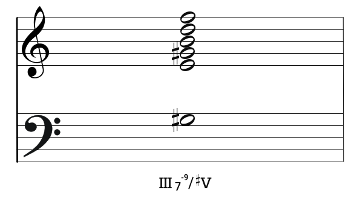
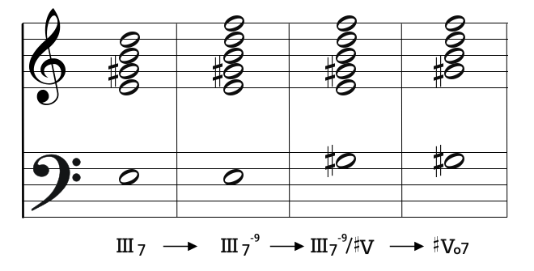
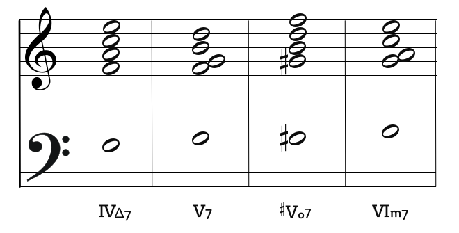

这一期是“掌握和弦用法”的一讲。 我们将运用“根音省略形态”的思维，探索减七和弦（Diminished 7th Chord）的实战妙用。当希望获得兼具复杂感与高雅品格的和声色彩时，这是一招绝妙的秘籍。
[gt_radar_chart id=”gt-radar-genrechart” width=”” height=”240″ labels=”J-Pop,Jazz,Classic,Cinematic,Electronic,Pop,Rock” animation_type=”radarar”][gt_chart_data fill_color=”#2060db” stroke_color=”#2060db” data=”100,100,100,50,10,50,10″][/gt_radar_chart]
在第III章中，我们学习了减七和弦。

它的结构非常特殊：所有组成音均以“小三度等间距”层层叠置，内部暗含着“两组三（Tritone）关系”。在第III章的阶段，我们只是简要提及了它在流行音乐中的应用；而本讲终于要正式揭开减七和弦在流行音乐中最核心的经典用法了。
 1. 根音省略形态
1. 根音省略形态
此前我们学习过贝斯弹奏非根音的“转位和弦”。

贝斯弹奏三音（3rd）的形式称为“第一转位”。这是构建顺滑贝斯线条极其好用的杀招。本讲我们将把这一知识进一步推向纵深。
副属和弦的第一转位
在4–5–3–6进行中，将“3”替换为副属和弦III7，是大家熟悉得不能再熟悉的黄金定式。
IVΔ7 V7 III7 VIm7
属七和弦强烈的张力与推动力无比强劲。而这个III7和弦，如果同样把三音作为贝斯低音，就能构建出一条极度平滑的贝斯线条。
IVΔ7 V7 III7/♯V VIm7
随着低音线条变得顺滑，低音的跳跃冲撞感被削弱，反而孕育出了一种更加内敛考究的高级美感。
升级版三度叠置
III7的和弦组成音是Mi–Sol♯–Si–Re；如果我们在三度叠置上再追加一层积木变成“九和弦”——也就是加入Fa音，效果会格外惊艳。
IVΔ7 V7 III7(-9) VIm7
和弦名称看起来复杂高深了，但原理却极其质朴：通过引入强倾向音Fa，进一步拔高了和声的戏剧张力。而这个和弦，理所当然同样可以配置为第一转位。
IVΔ7 V7 III7(-9)/♯V VIm7
和声越来越错综复杂了。不过仔细一想，同时鸣响Mi、Sol♯、Si、Re、Fa整整5个音，难免会显得略微嘈杂臃肿。作为编曲思维，我们应该思考如何适当精简声部，让声音通透清爽起来。
应该省略哪个音？


按照常规思路，无非是“因为与贝斯重复而删掉Sol♯”，或者“删掉本身无色无味的五音Si”。然而在这里，我们反其道而行之，特意选择‘把作为根音的Mi直接抽掉’！

看，奇迹发生了！最终形成的和弦，在物理形态上竟然与‘减七和弦（Diminished 7th）’完全重合了！ 就像一张经过重重美颜滤镜精修的照片看起来宛如另一个人一样，属七和弦一旦经过极限的“深度改装加工”，最终就会蜕变为减七和弦。


虽然外观看起来宛如脱胎换骨，但其内部的Sol♯、Si、Re这3个音与原本的III7完全重合，依然保留着清晰的血统烙印。因此，我们完全可以把这个减七和弦当作III7的化身来使用。
IVΔ7 V7 ♯Vo7 VIm7
Fa音带来的浓烈情绪、平滑推进的贝斯线条，再加上恰到好处的清爽音响密度……这几乎呈现出了一种无可挑剔的黄金平衡！最绝妙之处在于：哪怕Mi音根本没有鸣响，听众却依然能本能地感受到“这分明就是4–5–3–6经典王道进行的底色啊～”。这同样离不开人类大脑强大的认知补全机制。
根音省略形态（Rootless Chords）
像这样，“当我们结合上下文语境审视某个和弦时，若将其解读为‘另一个和弦抽掉了根音后的形态’能够解释得更加自然顺畅”，此类和弦便被称为根音省略形态（Rootless Chords）。

承认一个根本没有发声的音依然是该和弦的根音，这是一套相当耐人寻味的乐理逻辑[1]。
2. 经过减和弦（Passing Diminished）
我们重新回头观察刚才的和弦进行。
IVΔ7 V7 ♯Vo7 VIm7


这样看来，也可以将♯Vo7视为一座搭设在V与VIm这两个相隔全音的和弦之间的桥梁。正因为有了这个减七和弦的介入，贝斯形成了一段连续两次上行的极度平滑的动作。像这样“穿插在相隔全音的两个和弦之间以实现顺滑过渡连接的减七和弦”，被称为经过减和弦（Passing Diminished Chord）。
代表性的经过减和弦
基于“经过减和弦”原理引入的和弦绝不仅限于♯Vo7，事实上只要是穿插在调内基础和弦之间的，几乎全都是经典定式。

我们逐一来看除已介绍过的♯Vo7之外的成员。
♯Io7：VI7的改装形态
由VI7衍生而来的♯Io7，其核心要点在于除了Do♯外还包含了降Si（B♭）。该音具备强力流向La的倾向上行/下行力，因此与IIm的衔接极其顺畅自如。
IIm7 IIm7/V IΔ7 ♯Io7
而且，随着变音成分的增加，整体音响也平添了一份成熟典雅的格调！
♯IVo7：II7的改装形态
在IV与V之间插入减和弦，便是♯IVo7。
I/III IVΔ7 ♯IVo7 V I/III
在这种模式中由于引入了降Mi（E♭）音，调性会在一瞬间向同主音小调方向倾斜，因此相比其他几位，它的接入手法要求更加细腻考究。
♯IIo7：VII7的改装形态
在第II章中由于尚未深入探讨VII级和弦，当时未做过多展开；实际上还存在着VII7这一副属和弦并在第III章正式引入。将其改造为经过减和弦后得到的♯IIo7，可以无缝嵌入在II与III之间。
VIm7 IIm7 ♯IIo7 III7
通常其前置为IIm、后置为III7。这是自古典音乐时期便已被频繁运用的经典技法，散发着高贵典雅的宫廷气质。
♭IIIo7：下行经过减和弦
虽然经过减和弦绝大多数都在向上攀升的动线中使用，但偶尔也会出现在由IIIm向IIm回落的过程中。在这种场景下，通常会使用降号系的记号标记为♭IIIo7。
IVΔ7 V7 IIIm7 ♭IIIo7 IIm7 V7 IΔ7
它带来了一种略带刁钻、桀骜不驯的独特味道。虽然带有些许爵士气质的棱角，但若运用得当同样能产生极佳的效果。不过由于进行方向的关系，它无法被直接归类为“副属和弦的衍生”，因此在连接的纯粹顺畅度上略逊于上行型经过减和弦。
3. 与半减七和弦的互换性
在♯Vo7的情况下，按照Sol♯–Si–Re–Fa层层叠置，其七音Fa恰好非常巧妙地“本身就是该调的自然音（Diatonic）”。然而在其他一些减七和弦中，七音往往必须带上临时的降号，这种异化色彩有时与追求明媚的场景并不协调。

尤其像♯IVo7中的降Mi，极易让人联想到布鲁斯音符（Blue Note）或小调色彩，若想让歌曲保持阳光明朗，难免稍显突兀。在这种情况下，不加降号直接保持还原自然音，在音响上同样能构建出极其自然且极富魅力的形态。此时，和弦品质便转化为了“半减七和弦（Half-Diminished 7th）”。

它同样可以被解读为副属和弦的衍生形态，能够在作品中无缝替换副属和弦登场。
IIm7 IIIm7 IV ♯IVø7 V ♯Vo7
这是副歌前夕极具代表性的高潮和弦进行。像这样迈向V级的♯IVø7，散发着浓郁的II7气质，带来格外明澈敞亮的心象。
IIm9 V7 IΔ9 ♯Iø7
♯Iø7同样因其明朗通透的特质，与本次示范中欢快的2-5-1进行相得益彰。业界对这类模式并没有单独固化的专有术语，硬要称呼的话，不妨称之为“经过半减和弦（Passing Half-Diminished）”。
4. 非夹心式的进阶用法
前面介绍的减和弦与半减和弦，当然绝不仅仅局限于“夹在两和弦之间当三明治”这一种形态。只要依托“九和弦化 + 根音省略”的核心原理，完全可以开拓出更加宽广多维的用法。
IVΔ7 III7 VIm7 Vm7 I7
这是在“同主音小调”一讲中也曾介绍过的J-Pop王道进行之一。若将这里的III7和I7加以变形……
IVΔ7 ♯Vo7 VIm7 Vm7 IIIø7
就变成了这样！这一次，前一个和弦发生跳进，随后顺畅地半音上行迈向下一个和弦。虽然它不再符合严格意义上的“经过（Passing）”定义，但在乐理本质上却完全如出一辙。
这就是生动的实战范例。在LiSA的《红莲华》（紅蓮華）副歌中途唱到“ありがとう悲しみよ”（谢谢你，悲伤啊）处，在IV级之后直接大跳跃迁至♯Vo7，再顺畅切入以VIm为核心的强力Riff。 若是换作普通的III7，贝斯势必会发生下行，极有可能压制此处意图营造的高涨情绪；因此这一技法在此大放异彩。加之贝斯弹响了具有异质感的变音（Sol♯），更烘托出一种非同寻常的肃杀戏剧感。
顺带一提，在副歌后半段唱到“紅蓮の華よ”（红莲之花啊）处，再次使用了♯Vo7，而那一处则是极其标准的经典经过减和弦用法。
织就你的和弦网络
行文至此，掌握了经过减和弦之后，可以说流行音乐（尤其是J-Pop）中广为流传的和弦兵器库已被我们悉数收入囊中。只要面对学过的诸多和弦，能够依据“当想表达某种特定的曲思情绪时，换成这个会更对味”做出精准抉择，你就能将作品无限逼近内心真正渴望表达的声音。 以IV–V–IIIm–VIm为原型骨架，我们可以衍生出如下一系列色彩斑斓的变体：
| 和弦进行 | 音乐意境与情绪特质 |
|---|---|
| IIm– V– IIIm– VIm | 轮廓更加清晰利落、铿锵有力 |
| IV– V– III– VIm | 能够表达更深层次的情绪昂扬与激动 |
| IIm– V– IIIm– VI | 散发出一缕向阳而生的希望微光 |
| IV– V– IIø7– III– VIm | 情绪更显动荡不安、悬疑震撼 |
| IV– IVmΔ7– IIIm– VIm | 弥漫着更加凄美动人的哀愁氛围 |
| IV– IVm7– IIIm– ♭III | 更加洗练浓郁的Jazzy时尚感 |
| IV– V– IIIø7– VI7 | 摄人心魄的张力反转杀手锏 |
| IV– V– ♯Vo7– VI7 | 贝斯阶梯式上行带来的宏大戏剧感 |
如果在脑海中已将这些变体编织成一张清晰立体的网络图谱，作曲时便能信手拈来。依托深厚的乐理支撑，你定能在任何场景展开时，精准遴选出最契合主题灵魂的最佳和声路径。
总结
- 某些和弦从语境上看，若解释为“抽掉了另一个和弦的根音”会更加自然贴切，这种形态被称为“根音省略形态（Rootless Chords）”。
- 在两个和弦之间嵌入变化更加细腻的过渡和弦，能够营造出行云流水般的声部动线。
- 将减七和弦作为相差全音的两个和弦之间的平滑衔接桥梁，这一技法称为“经过减和弦（Passing Diminished）”。